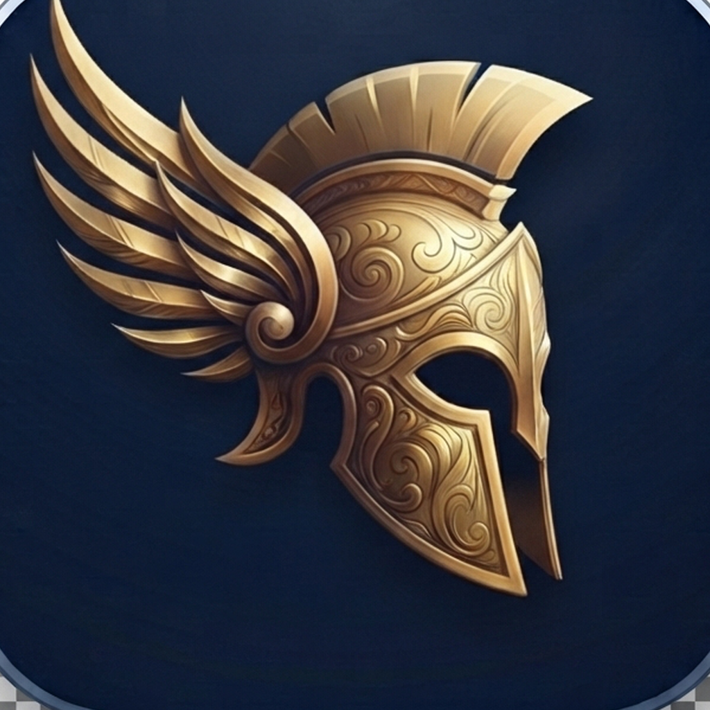

PetasosPetasos is the native cockpit for your own self-hosted AI agent — watch it work in real time, talk to it from anywhere, and keep every byte on hardware you control.
An EKG of tool activity, session status, the subagent tree, background processes, and a real-time event feed. Tap to interrupt a run or kill a process.
Full streaming chat with rich markdown and syntax-highlighted code. Voice input transcribed on-device. Attach files. Sketch with Apple Pencil.
Categories, channels, and threads that sync across your devices. Unread indicators, full-text search over everything, pinning, archiving.
Create and manage cron jobs from your phone — plain-language schedules, one-tap pause, a feed of every run's results, and alerts when they finish.
When your agent needs permission, your phone buzzes. Approve or deny from the banner — from the couch or the other side of the world.
No backend of ours. Your credentials stay in your device's Keychain and speak only to the gateway you run. No tracking, no ads, no third-party SDKs.
hermes-pair-qr on that machine and scan the code with Petasos.